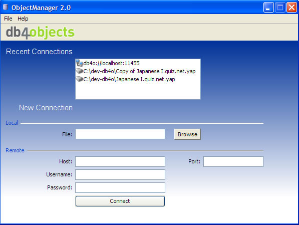
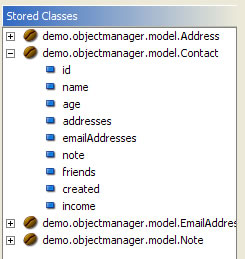
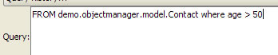
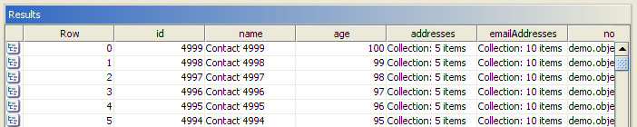
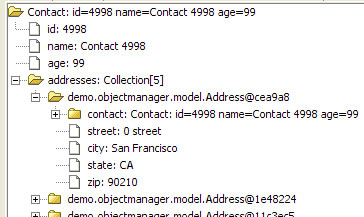

Upon starting Object Manager, you will see the Connection Manager:

At this point, you can either:
In order to open a db4o database file, simply click Browse and choose the db4o database file to open, then click Connect.
If you just want to try ObjectManager, you can create a demo database by clicking File - Create Demo Db. This will create and open a database for you to use.
Once you click connect, the main ObjectManager window will open. All of the classes that have been stored will be displayed on the left in a tree:

To view the objects stored in your db4o database, you must query for it. The query editor is at the top of the main window and looks like this:

To quickly see all of the objects of a certain class, just double click the class name in the stored classes tree. This will automatically build your query for you, and you just have to click the Submit button to the right of the query text area.
The Object Manager query language, Sql4o, is based on the SQL query language, so if you know SQL, you should have no problems with Sql4o.
Syntax:
[SELECT select_expr, ...]
FROM object_type
[WHERE where_condition]
For example, to query all Contacts in the Demo Db:
FROM demo.objectmanager.model.Contact
To query all contacts with age 50.
FROM demo.objectmanager.model.Contact where age 50
After executing a query, you will see the query results in table:

From this table, you can edit all primitive fields, Dates, and Strings by double clicking on a cell.
You can also open an object up in a tree view so that you can descend further into the object:

You can also edit fields from this view.
There are currently two management features available:
Backup will ask you for a location to store the backup, once that is chosen, the backup copy of your database will be created.
Defragment will execute the db4o defragment process on your database.
You can access database management functions from the Manage menu
Please see the ObjectManager wiki page for the latest information on ObjectManager.